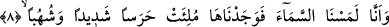
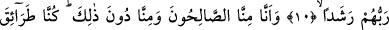

BİZ ALLAH’I
ÂCİZ BIRAKAMAYACAĞIZ
8. Doğrusu biz (cinler), göğü yokladık, fakat onu sert bekçilerle, alev
huzmeleriyle doldurulmuş bulduk.
9. Hâlbuki (daha önce) biz onun bâzı kısımlarında (haber) dinlemek için oturacak
yerler (bulup) oturuyorduk; fakat şimdi kim dinlemek isterse, kendisini gözetleyen
bir alev huzmesi buluyor.
10. Bilmiyoruz, yeryüzündekilere kötülük mü murat edildi, yoksa Rableri onlara
bir hayır mı diledi?
11. Gerçekten biz, -kimimiz sâlih kişiler, kimimiz ise bunlardan aşağıda olmak
üzere- türlü türlü yollar tutmuştuk.
12. (Artık) şu gerçeği şüphesiz anladık ki, biz yeryüzünde bulunsak da Allah’ı
âciz bırakamayacağız, başka yere kaçmakla da elinden kurtulamayacağız.
13. Doğrusu biz, o hidâyeti (Kur’an’ı) işitince ona îman ettik. Kim Rabbine îman
ederse, artık ne bir (ecrinin) eksikliğe uğratılmasından ne de haksızlık
edilmesinden korkar.
14. İçimizde, (Allah’a) teslimiyet gösterenler de var, hak yoldan sapanlar da var.
Teslimiyet gösteren kimseler, doğru yolu arayanlardır.
15. Hak yoldan sapanlara gelince, onlar cehenneme odun olmuşlardır.
16. Şâyet doğru yolda gitselerdi, onlara bol su verirdik.
17. Bu hususta kendilerini denememiz için. Kim Rabbinin zikrinden yüz çevirirse,